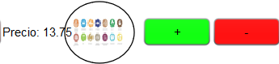
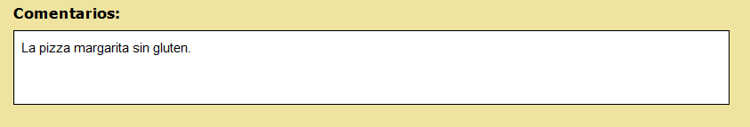

En el menú principal podrá observar un botón que pone "Intolerancias", si pulsa sobre él podrá filtrar los artículos de la carta mostrándose solo los que pueden ser adaptados a alguna intolerancia. En caso de no utilizar el filtro se muestra mediante una imagen entre el precio y los botones de añadir y eliminar de cada artículo, si se muestra la imagen es que es posible adaptarlo a intolerancias, si no aparece es que no es posible.

Una vez pulsa el botón de tramitar y ver pedido, podrá observar un cuadro que pone "Comentarios", ahí podrá especificar la elaboración especial del plato en caso de que sea posible.
